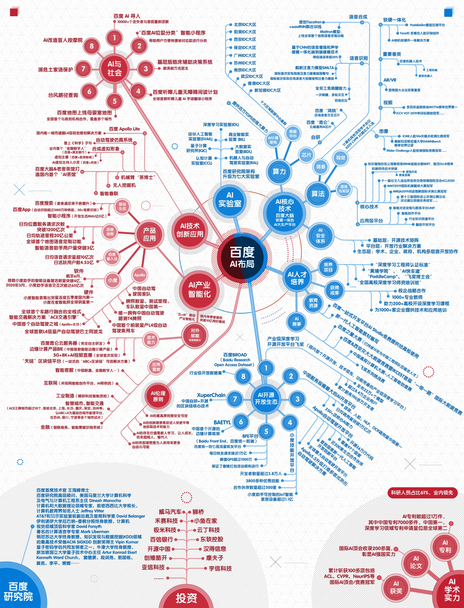

5.2. AI公司¶
5.2.2. 阵营 4¶
人工智能公司（主要针对创业公司）主要分为三个阵营：5
研究核心技术的AI公司（Core AI Companies）核心人工智能，主要针对人工智能基础设施的搭建。产品经理侧重于对底层技术框架的理解。
应用人工智能公司（Application AI Companies）：通常的表现形式是提供一种基础功能，客户可以通过调用封装好的API进行对自身产品的武装或填充，而无需自己研究基础功能。因为往往对于一些中小公司而言，拥有的数据量有限，无法通过机器学习技术完成对每一个基础功能的建模和应用部署，因此需要借助这样公司提供的开放API能力，然后自身做垂直应用。产品对行业的理解力和对行业趋势的洞察力是核心；应用AI技术公司的商业模式以TO B为主，产品经理的KPI是项目回款，因此产品经理需要有一定的商务技能（售前、销售）；同时因为需要定制化开发，产品经理要明确区分标准化产品和定制化产品；
行业人工智能公司（Industry AI Companies）：三个阵营中最接近终端用户的公司，提供垂直领域的AI服务，帮助用户解决具体场景中的具体问题。产品对行业的理解力和对行业趋势的洞察力是核心
核心人工智能公司往往对产品经理在技术层面要求最高，应用人工智能其次，行业垂直应用人工智能公司是对产品经理的业务深度或行业理解深度要求最高。
5.2.3. Baidu¶
2016 ACL Fellow 百度 CTO 王海峰。1
作为百度集团首席技术官，王海峰负责百度搜索、语音搜索、图像搜索、信息流、手机百度、小度机器人、自然语言处理、知识图谱、互联网数据挖掘等业务，并曾创始了百度语音、图像、推荐及个性化、深度学习、度秘等多个技术方向。由王海峰领导研发的百度翻译产品目前支持 28 种语言、756 个方向的自动翻译，并于 2015 年 5 月上线了全球首个融合神经网络机器翻译和统计机器翻译模型的大规模在线翻译系统。其领导的「基于大数据的互联网机器翻译核心技术及产业化」还荣获了 2015 年国家科技进步奖，这也是我国互联网企业首次获得该奖项。
2016 年，王海峰当选 ACL Fellow，成为了首位获此荣誉的中国大陆科学家。会士评选委员会在对王海峰的评语中写道：王海峰在机器翻译、自然语言处理和搜索引擎技术领域，在学术界和工业界都取得了杰出成就，对于 ACL 在亚洲的发展也做出了卓越贡献。
在前沿技术领域，拥有七大实验室、聚集数十位世界顶级AI科学家的百度研究院，正在聚焦前瞻基础研究，探索技术前沿方向。比如，在量子领域，除“量桨”之外，百度还研发出了国际领先、国内第一的云上量子脉冲系统“量脉”。在区块链领域，百度超级链XuperChain实现了核心技术自主可控，专利申请量200多件。在工业物联网安全领域，百度AIoT安全能力覆盖六大场景，覆盖终端设备超过1.5亿。
在芯片方面，百度自主研发的百度昆仑AI芯片、百度鸿鹄AI芯片，正在为新基建提供可靠的动力。百度昆仑芯片是业界实际性能最高的AI芯片，也是首次在工业领域大规模应用的中国自研AI芯片。百度鸿鹄芯片作为远场语音芯片，适配于车载、智能家具等场景，一颗芯片就能解决所有语音交互问题，是一个足以改变行业的技术革新。
百度智能云已经取得了一系列傲人的成果：智慧金融已服务近200家金融客户，涉及营销、风控等十几个金融场景；智慧医疗的产品已经服务300多家医院和超过1500家基层医疗机构，服务人次超过了2500万；智慧城市则已经逐渐落地北京海淀、重庆、苏州等城市，成为新一代城市智能基础设施，让城市变得更智慧；智慧能源领域中，企业级AI中台、知识中台在国家电网、南方电网等头部客户落地应用，支撑20多个业务场景，覆盖两条特高压智能化线路、150多个智慧变电站、4万多条输电线路的监拍智能化，每天代替人工巡视能源路线超过7万公里；智能制造领域中，已覆盖14大行业，30余家企业，16个合作伙伴，触达32类垂直场景，在3C、汽车、钢铁、能源等行业已规模落地。
智能交通方面，百度Apollo依托百度领先的AI能力，接连中标重庆、合肥、阳泉等地车路协同新基建项目，Apollo Robotaxi自动驾驶出租车服务也已在长沙全面开放试运营。第一季度，知名研究公司Navigant Research将百度Apollo列为全球四大自动驾驶领域领导者之一。6
 ## Aliyun
机器学习PAI Studio2 PAI-Studio为开发者提供可视化的机器学习实验开发环境，帮助用户实现0代码开发人工智能相关服务。内置数百个成熟的机器学习算法，覆盖商品推荐、金融风控、广告预测等场景。
PAI平台提供将常规机器学习模型/深度学习模型一键发布为Restful API的功能，支持用户通过http请求调用模型服务做实时预测，并且提供蓝绿部署、模型版本管理、在线调试等服务功能。 每个模型在部署的时候由用户选择占用的资源：CPU部署单位为Quota，GPU部署目前支持P4卡(NVidia Tesla P4 GPU卡)，部署单位为P4Quota
部署单位说明： 1Quota为1核CPU、4G内存 1P4quota为1P4卡、8核CPU、32G内存
每个模型服务费用=部属单位数量部属单位单价时长
模型一旦部署并处于running状态就会开始计费，请切记及时停止无用的模型服务，以免造成不必要的费用开销 后付费服务类型 价格 区域 CPU服务 0.4元/Quota/小时 华东2、华北2 GPU服务（P4卡） 8元/P4Quota/小时 华东2、华北2
5.2.4. More¶
https://www.tusimple.com/ https://github.com/amusi/CV-Company-List 开源：https://www.oschina.net/company http://www.birdbot.cn/
阿波罗的官网地址是： http://apollo.auto/
源代码，文档与数据下载地址为： https://github.com/apolloauto